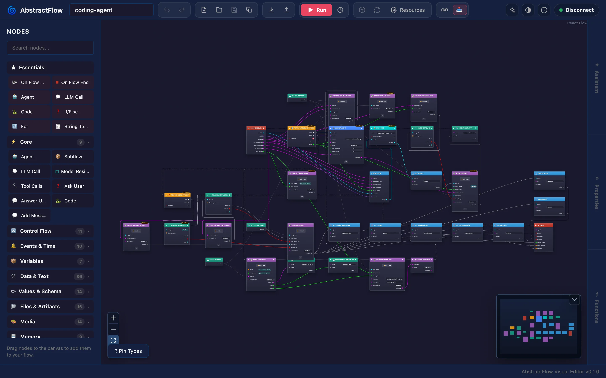
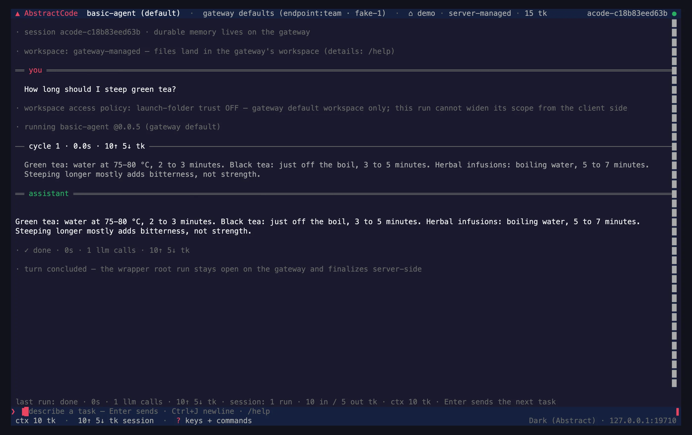
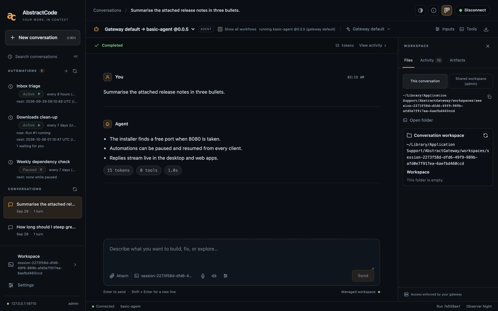
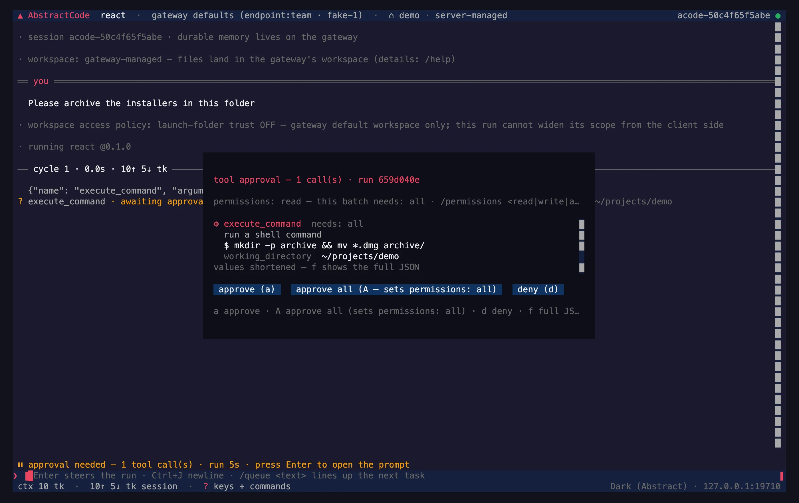
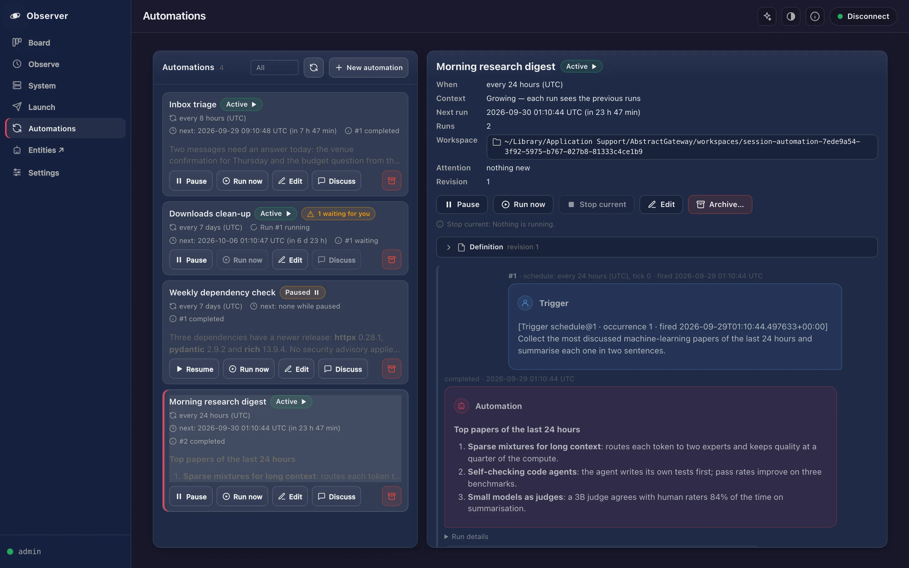
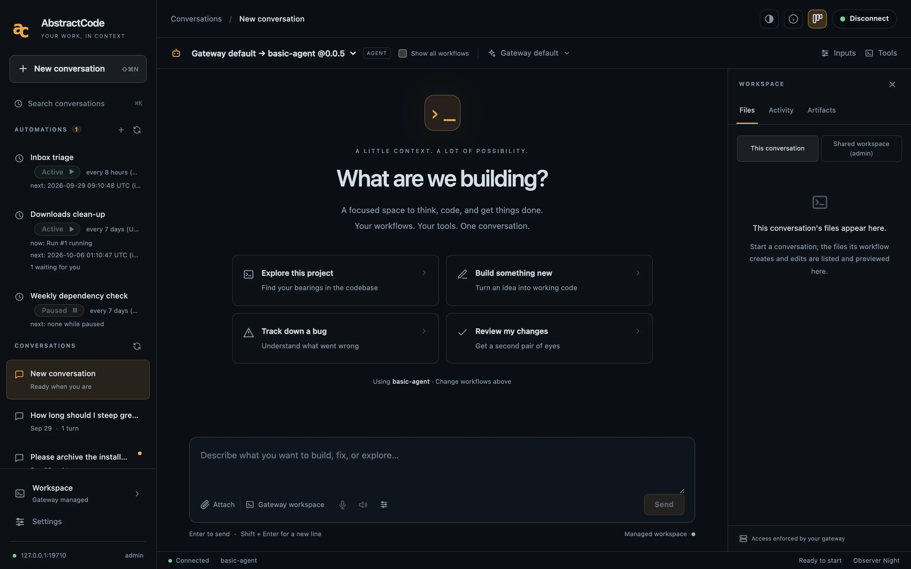
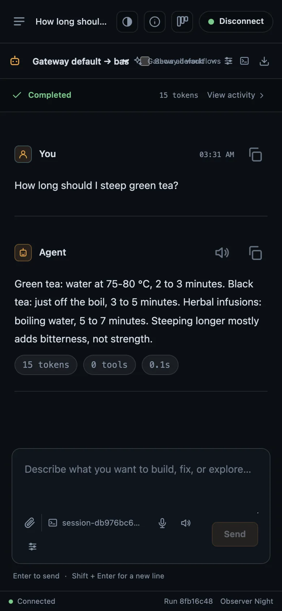

Write once.
Generate everything.
Run anywhere.
A modular, open-source framework for durable, observable, multimodal AI. One Python API for any model, local or cloud. One runtime where agents pause, resume and replay. One gateway on macOS, Linux, Windows or in a container, on your laptop, your network or the internet, with thin clients on every device. In: text, images, audio, video, documents. Out: text, voice, music, images, video, 3D.
curl -LsSf https://raw.githubusercontent.com/lpalbou/AbstractFramework/main/scripts/install.sh | sh
macOS 13 or later. Installs in your user account and opens the web console, signed in. All install options →
from abstractcore import create_llm
# Local model on Apple silicon (MLX). Any provider works the same way, e.g.
# create_llm("openai", model="gpt-5-mini") or create_llm("ollama", model="qwen3:4b").
llm = create_llm("mlx", model="mlx-community/Qwen3.5-4B-4bit")
response = llm.generate("In two sentences, what is a durable workflow runtime?")
# Image, voice, music: needs the capability routes configured once, from the gateway
# console's "Use recommended defaults" or `abstractcore config set-default ...`
image = llm.generate("A watercolor illustration of a lighthouse on a rocky coast at dawn, "
"soft light, calm sea, seagulls in the distance", output="image")
speech = llm.generate(text="AbstractFramework: write once, generate everything, run anywhere.",
output="voice")
music = llm.generate(text="Calm ambient piano with soft strings, instrumental", output="music")Choose Your Entry Point
Start with the LLM library in your own code, or run the gateway as a control plane with apps on every device. Both use the same packages underneath.

AbstractCore
Start here if you need an LLM library for scripts, notebooks or your own application. No server: install it, pick a provider and a model, and call it. You choose the provider and model for each capability explicitly, per call, or once as a default.
- 10 provider types behind one API, local and cloud
- Tool calling, structured output, streaming, media input
- Capability plugins: voice, music, vision, 3D, camera
- An OpenAI-compatible
/v1server, a web console andabstractcore-console - Model recommendations for this machine before you download
pip install abstractcore # Ollama, LM Studio, OpenRouter, Portkey, any /v1 endpoint
pip install "abstractcore[remote]" # + OpenAI and Anthropic SDKs
pip install "abstractcore[mlx]" # + local MLX on Apple siliconWhen to use AbstractCore
You are writing a script, a notebook or a tool. You want to talk to models with minimal setup and switch between local runtimes and cloud APIs without rewriting your code. You do not need persistent runs or a server.
from abstractcore import create_llm
# Local model on Apple silicon (MLX). Any provider works the same way, e.g.
# create_llm("openai", model="gpt-5-mini") or create_llm("ollama", model="qwen3:4b").
llm = create_llm("mlx", model="mlx-community/Qwen3.5-4B-4bit")
response = llm.generate("In two sentences, what is a durable workflow runtime?")
print(response.content)
AbstractGateway
Start here for agents that run for hours, workflows that survive restarts, automations, and several clients on several devices. The gateway is the control plane on the durable runtime. Its console's first-run guide and Use recommended defaults set the models for text, voice, images and video where this computer can run them.
- Durable runs that survive restarts, with an append-only ledger
- Automations: recurring or on-demand runs kept as conversations
- Web and terminal consoles, user accounts, network access
- Thin clients in a terminal, a browser and the menu bar; Telegram and email bridges
- Start on one device, continue on another
pip install abstractgateway
# or
docker pull ghcr.io/lpalbou/abstractgateway:0.7.1When to use AbstractGateway
You are building a product or running AI for yourself or a team: a coding agent, recurring reports, a chat that follows you across devices. You want runs that survive crashes, user accounts, and clients that are views of the same run.
# Start once. Connect from anywhere.
abstractgateway serve
# prints http://127.0.0.1:8080/console#claim=... (one-time sign-in link)
# Browser apps, served by the gateway itself
http://127.0.0.1:8080/apps/code/
http://127.0.0.1:8080/apps/observer/
# Terminal client, signed in to a remote gateway
abstractcode login --gateway-url https://gateway.example.com --token <TOKEN>llm.generate("...", output="image") is one line only once a default route is configured for that capability: from the gateway console (the first-run guide's Use recommended defaults, or the Multimodal tab), or with abstractcore config set-default. Without a default, name the provider and model in the call; both forms are shown in Multimodal.One Interface for Every Modality
Text, images, audio, video and documents in; text, voice, music, images, video and 3D out, through the same generate() on the same LLM instance. Each modality is a capability plugin: install it and AbstractCore picks it up.
media=Text
Any of ten provider types, local or cloud, with tools and structured output.
Images
A vision model, or a vision fallback that describes the image for a text-only model.
Audio
An audio-capable model, or speech-to-text through AbstractVoice.
Video
Native video where the model supports it, otherwise sampled frames.
Documents
PDFs and Office files, with optional visual-text compression for long ones.
llm.generate()
one call, one policy for media,local and cloud models
output=Text AbstractCore
Streaming, tool calls and structured output, the same across providers.
Voice AbstractVoice
Text-to-speech, speech-to-text and voice cloning, local or remote.
Music AbstractMusic
Text-to-music: ACE-Step and Stable Audio locally, ACE Music and ElevenLabs remotely.
Vision: images and video AbstractVision
Generate, edit and upscale images; text-to-video and image-to-video.
3D Abstract3D
Image-to-3D and text-to-3D, with GLB output.
Media input follows explicit policies, never silent changes. AbstractCamera is a capability too, for capture rather than generation: it opens real cameras, takes photos and clips, and gives an agent camera tools. The one-line output="image" form needs a default route for that capability; without one, name the provider and model in the call. Both forms ran as shown below.
- Defaults come from the gateway console (Use recommended defaults or the Multimodal tab) or from
abstractcore config set-default. Once a capability has a default, its call is one line.
# Configure AbstractCore's capability routes once (the gateway console's
# "Use recommended defaults" writes the same store)
abstractcore config set-default output.image --provider mlx-gen --model AbstractFramework/flux.2-klein-4b-8bit
abstractcore config set-default output.voice --provider supertonic --model supertonic-3
abstractcore config set-default output.music --provider acestep --model ACE-Step/acestep-v15-xl-turbo-diffusers
abstractcore config defaultsfrom abstractcore import create_llm
# The capability routes come from AbstractCore's config (defaults.sh above,
# or the gateway console's recommended defaults); the text model is explicit.
llm = create_llm("mlx", model="mlx-community/Qwen3.5-4B-4bit")
image = llm.generate("A watercolor illustration of a lighthouse on a rocky coast at dawn, "
"soft light, calm sea, seagulls in the distance", output="image")
open("lighthouse.png", "wb").write(image.outputs["image"][0].data)
speech = llm.generate(text="AbstractFramework: write once, generate everything, run anywhere.",
output="voice")
open("tagline.wav", "wb").write(speech.outputs["voice"][0].data)
music = llm.generate(text="Calm ambient piano with soft strings, instrumental", output="music")
open("ambient.wav", "wb").write(music.outputs["music"][0].data)- No defaults and no server: name the provider and the model for each capability in the call.
# ran with: pip install "abstractframework[apple]" (AbstractCore, the plugins and the Apple silicon engines)
from abstractcore import create_llm
llm = create_llm("mlx", model="mlx-community/Qwen3.5-4B-4bit")
image = llm.generate(
"A watercolor illustration of a lighthouse on a rocky coast at dawn, soft light, calm sea",
output={"modality": "image", "provider": "mlx-gen",
"model": "AbstractFramework/flux.2-klein-4b-8bit", "width": 1024, "height": 1024},
)
open("lighthouse.png", "wb").write(image.outputs["image"][0].data)
speech = llm.generate(
text="AbstractFramework: write once, generate everything, run anywhere.",
output={"modality": "voice", "provider": "supertonic", "model": "supertonic-3"},
)
music = llm.generate(
text="Calm ambient piano with soft strings, warm and hopeful, instrumental",
output={"modality": "music", "provider": "acestep",
"model": "ACE-Step/acestep-v15-xl-turbo-diffusers", "duration_s": 15},
)- Any OpenAI client, in any language, against
abstractcore serve(install"abstractcore[server]"). The server asks for a bearer token, even on loopback.
# Start the OpenAI-compatible server (another terminal): abstractcore serve --port 19740
BASE=http://127.0.0.1:19740
TOKEN=$(abstractcore serve --print-token --port 19740) # loopback bearer token, created on first use
curl -sS "$BASE/v1/models" -H "Authorization: Bearer $TOKEN"
curl -sS "$BASE/v1/chat/completions" -H "Authorization: Bearer $TOKEN" \
-H "Content-Type: application/json" \
-d '{"model": "mlx/mlx-community/Qwen3.5-4B-4bit",
"messages": [{"role": "user", "content": "In one sentence, what is an append-only ledger?"}]}'
curl -sS "$BASE/v1/audio/speech" -H "Authorization: Bearer $TOKEN" \
-H "Content-Type: application/json" \
-d '{"provider": "supertonic", "model": "supertonic-3", "input": "Write once. Generate everything. Run anywhere.",
"response_format": "wav"}' --output speech.wav
curl -sS "$BASE/v1/images/generations" -H "Authorization: Bearer $TOKEN" \
-H "Content-Type: application/json" \
-d '{"provider": "mlx-gen", "model": "AbstractFramework/flux.2-klein-4b-8bit",
"prompt": "A paper boat on a calm lake at sunrise, watercolor",
"width": 1024, "height": 1024, "response_format": "b64_json"}' > image.jsonWhat that code produced
AbstractFramework: write once, generate everything, run anywhere.
Calm ambient piano with soft strings, instrumental
A watercolor illustration of a lighthouse on a rocky coast at dawn, soft light, calm sea, seagulls in the distance
A Durable Orchestration Stack, in Three Layers
Most agent libraries orchestrate inside your process. AbstractFramework adds durable runs, a replay-first ledger and a control plane with clients. Use one layer or all three.
One API for every model and modality
AbstractCore in your Python code: ten provider types, tools, structured output, media input, and capability plugins for voice, music, images and video, 3D and cameras.
Agents that pause, resume and replay
AbstractRuntime runs agents and workflows as durable runs: every step, effect and wait goes to an append-only ledger. Agent patterns, memory, semantics, skills and portable .flow bundles build on it.
A gateway and thin clients
AbstractGateway starts, resumes and cancels runs, schedules automations, manages users and network access, and serves the consoles and apps. Every client replays the same runs.
vs direct provider SDKs
Fine when you use one provider and need no durable orchestration. AbstractCore adds provider portability between local and cloud, consistent tool and structured-output behavior across backends, media policies and capability plugins.
vs LangChain, LlamaIndex, PydanticAI
AbstractFramework is stronger on durability and pause/resume as primitives, replay-first observability and portable .flow bundles. Those libraries have larger connector and RAG ecosystems; you can use them as tools inside AbstractFramework.
vs Temporal, job schedulers
AbstractGateway is architecturally closer to these, specialised for LLM and tool loops: tool-approval waits, AI artifacts, and thin clients that replay runs over HTTP and SSE.
Modular by Design
Every package is independently installable. Hover or focus each block to explore; click it to open its page. Use one or compose the full stack.
| Layer | Packages |
|---|---|
| Applications | AbstractFlow, AbstractCode, AbstractObserver, AbstractAssistant, AbstractContinuum, AbstractEntity |
| Control plane | AbstractGateway (web console, abstractgateway-console) |
| Durable runtime | AbstractRuntime, AbstractAgent, AbstractMemory, AbstractSemantics, AbstractSkill |
| Library | AbstractCore, AbstractVoice, AbstractMusic, AbstractVision, Abstract3D, AbstractCamera |
| Toolkits | AbstractTUI, AbstractUIC, MLX-Gen |
Agentic operations run on the runtime
AbstractRuntime executes every agent and workflow as a durable run. Each step, effect, wait and error is appended to the run's ledger, so a run survives restarts and can be replayed.
The gateway is the controller
AbstractGateway starts, resumes and cancels runs, keeps durable schedules for automations, owns users, auth and the Network setting, and serves the consoles and the browser apps.
The apps are thin clients
A client holds no durable state: it rebuilds its view by replaying the ledger, then follows new events over SSE. Several apps on several devices are live views of the same run.
Also on PyPI, reserved with no runtime yet: abstractsound, abstractvideo, abstractspatial, abstractgeometry, abstractcognition.
The Ledger Is the Record of the Run
Most stacks log what an agent did. Here every step is appended to the run's ledger as it happens, and everything you see about a run is read back from it.
Each step writes one record: the node, the effect it asked for with its full payload, the result or the error, the status and the timing. Records are only ever appended, next to a durable checkpoint of the run's state.
Nothing summarised away
Prompts, model replies, tool calls and their results, waits and approvals are all records. The chat transcript, the tool activity and the Observer's trace are views of the same ledger.
Survives a crash or a restart
A record is written before the checkpoint that commits it. After a restart the run resumes from its last checkpoint, and effects that already completed are not run twice.
Thin apps replay it, from any device
AbstractCode, the Assistant, the Observer and your own app page through the ledger from any cursor, then follow new records live over SSE. A client that reconnects catches up from where it stopped, so every device shows the same run.
- 01llm_callreason · model requeststarted
- 02llm_callreason · reply with one tool callcompleted
- 03tool_callsact · payload: tool and argumentsstarted
- 04tool_callsact · waiting for your approvalwaiting
- 05tool_callsact · approved, tool resultcompleted
- 06llm_callreason · model request with the resultstarted
- 07llm_callreason · final answercompleted
# Replay the ledger, then follow new records live (SSE)
curl -sS -H "Authorization: Bearer $TOKEN" "$GW/api/gateway/runs/$RUN_ID/ledger?after=0"
curl -sS -N -H "Authorization: Bearer $TOKEN" "$GW/api/gateway/runs/$RUN_ID/ledger/stream"
# The run and its ledger survive a gateway restart
curl -sS -H "Authorization: Bearer $TOKEN" "$GW/api/gateway/runs/$RUN_ID"For the Apps, the Ledger Is the Run
For the apps, the ledger is the run: they hold no state of their own; they load the run's history from the gateway and follow it live. The Observer's Ledger tab shows each record with its JSON payload.

Design on your laptop. Deploy anywhere. Same framework.
The same gateway runs on this computer, a server on your network, a container or the internet. You choose who can reach it; the install profile decides which local engines it carries. Local and cloud models mix freely.
This computer
The default: 127.0.0.1:8080, start at login if you want it, and a tray icon (the menu bar on macOS).
Local network
Set the Network setting to lan and every device at home or in the office reaches the same gateway, with user accounts.
Internet
Set it to internet behind your own TLS and port forwarding or reverse proxy; user accounts are required.
Headless server or container
Install over SSH and configure with the terminal console; one SSH tunnel reaches the console, the API and every app. Or run the GHCR container.
Light
Cloud APIs and endpoint servers: OpenAI, Anthropic, OpenRouter, Portkey, LM Studio, Ollama, vLLM and any OpenAI-compatible endpoint. Runs anywhere Python runs.
Apple
Adds the local MLX and Metal engines on Apple Silicon (macOS 14 or later) for text, voice, images and video, next to everything in Light.
GPU
Adds the local engines for NVIDIA CUDA or AMD ROCm on Linux, and Windows where the wheels exist, next to everything in Light.
# From your computer: one tunnel for the console, the API and every app
ssh -L 8080:127.0.0.1:8080 <server>
# then open http://127.0.0.1:8080/consoleEvery Component, Layer by Layer
From the library to the applications: 21 components, published as 24 packages on PyPI, npm and crates.io, grouped by the layer they belong to. Each one is useful on its own. Versions are the released ones; Abstract3D and AbstractCamera install separately.
Library
AbstractCore and its capability plugins, in your own Python code
AbstractCore 2.18.0
One Python API over ten provider types: OpenAI, Anthropic, OpenRouter, Portkey, Ollama, LM Studio, MLX, Hugging Face, vLLM and any OpenAI-compatible endpoint. Tools, structured output, streaming, media input, embeddings, capability plugins and an OpenAI-compatible server.
- Web console:
abstractcore serve, then the printed/consolelink - Terminal console:
abstractcore-console(crates.io, 0.4.0)
AbstractVoice 0.13.0
Text-to-speech, speech-to-text and voice cloning: Supertonic, Piper, Qwen3-TTS, OmniVoice, Whisper and more locally, OpenAI and OpenAI-compatible voice remotely.
AbstractMusic 0.1.15
Text-to-music and text-to-audio: ACE-Step and Stable Audio locally, ACE Music and ElevenLabs remotely.
AbstractVision 0.3.30
Image generation, editing and upscaling, text-to-video and image-to-video through MLX-Gen on Apple Silicon, Diffusers, stable-diffusion.cpp or OpenAI-compatible services.
Abstract3D 0.3.1
Image-to-3D and text-to-3D with a validated local TripoSR backend and GLB output, mesh operations and AI tools; other local backends are experimental. Installs separately: pip install abstract3d.
AbstractCamera 0.2.0
Camera control for tethered bodies, webcams and DWARF smart telescopes behind one manager, with camera tools an agent can call. Installs separately: pip install abstractcamera.
Durable runtime
Where agents and workflows run, remember and learn skills
AbstractRuntime 0.7.1
The durable kernel where agents and workflows run: effects and waits, checkpoint and resume, an append-only ledger, and a history window of whole messages up to 50,000 tokens.
AbstractAgent 0.3.17
Agent patterns: ReAct, CodeAct and MemAct loops, run durably by AbstractRuntime, with tool approval and full observability of every cycle.
AbstractSkill 0.3.0
Agent Skills (SKILL.md): parsing and validation, the curated skill shelf the gateway seeds, and the trust gate applied before a skill reaches a run.
AbstractMemory 0.3.0
Durable, append-only agent memory: temporal, provenance-aware triples, and a memory system that forms, recalls and consolidates records from use.
AbstractSemantics 0.0.5
The shared vocabulary: predicates, entity types and memory relations in one editable registry, with a bounded JSON Schema builder for knowledge-graph output.
Control plane
One gateway that starts, resumes and schedules runs and serves every client
AbstractGateway 0.7.1
The control plane: durable runs over HTTP and SSE, automations, users and auth, the Network setting, and the browser apps on one address. SQLite or Postgres.
- Web console at
/console: setup, models that fit this machine, engines, network, users - Terminal console:
abstractgateway-console(crates.io, 0.11.0), the same setup over SSH
Applications
Thin clients of the gateway: they replay and follow the same runs
AbstractFlow 0.4.0
The visual workflow editor: draw a graph that mixes agent steps with deterministic nodes. On publish, the gateway installs it as a versioned .flow bundle that runs on AbstractRuntime; the Observer and the API start any published workflow, and agent clients run the ones that declare their interface.
AbstractCode 0.7.1 / 0.6.1
A coding agent that runs durably on the gateway, with a terminal client (0.7.1) and a browser client (0.6.1): tool approvals, workspace files, steering and automations.
AbstractObserver 0.2.1
Watch runs live, replay the ledger step by step, and create and manage automations, in the browser.
AbstractAssistant 0.9.1
A desktop assistant in your menu bar or system tray: a chat palette one shortcut away, hands-free voice conversations and a small CLI, on your gateway's sessions and workflows. Built for macOS, with an app bundle you can build; the same app runs from pip on Linux and Windows.
AbstractContinuum 0.4.0
A board-first console for continuous development and deployment work, served by the gateway.
AbstractEntity 0.3.0
Create entities with a lasting memory of their own, talk with them and read their diaries, served by the gateway.
Toolkits
The toolkits the framework's own apps are built from, published for yours
AbstractTUI 0.6.0
The Rust terminal UI engine behind AbstractCode's terminal client and the AbstractGateway and AbstractCore terminal consoles: reactive signals, a compositor, a streaming chat feed, Markdown, 26 themes, images and 3D in the terminal. Reuse it for your own terminal apps.
- AbstractCode terminal client:
abstracttui0.6.0 abstractgateway-consoleandabstractcore-console:abstracttui0.3.6
AbstractUIC ui-kit 0.1.16
The web UI kit of the framework's browser apps: React components (chat panel, provider and model pickers, gateway sign-in, About dialog), Web Components, 21 themes and a Node.js gateway session proxy. The gateway web console embeds its components as islands. Reuse it for your own web apps on a gateway.
Draw a Multi-Agent System. Then Use It.
In AbstractFlow you wire agents and model calls together with plain Python code, branches, loops, subflows and a human approval step. Publish the graph and it becomes an executable on your gateway: start it from the Observer or one API call, repeat it as an automation, and run it in the chats and agent sessions of AbstractCode and the Assistant when it declares their agent interface.

Loop engineering, graph engineering
The loop, the reviewer and the deterministic checks are nodes you can see. Change one, publish again, and the next run uses it.
- Agent, LLM Call, Tool Calls and Subflow nodes next to sandboxed Python Code
- If/Else, Switch, ForEach, For, While, Parallel and Sequence
- Ask User pauses the run until a person answers
- Voice, music, image, video and camera nodes on the gateway's capabilities
1. Draw
Build the graph in the browser. Declare the interface it implements, such as abstractcode.agent.v1, so agent clients know how to call it.
2. Publish
Publish packs a new .flow bundle version and installs it on the gateway. Earlier versions stay available.
3. Run it from the clients
Launch in the Observer or one API call starts any published workflow; an automation repeats it. AbstractCode lists the workflows that declare abstractcode.agent.v1 (/workflow in the terminal, the Workflow list on the web); the Assistant runs those that declare abstractassistant.agent.v1 from the shared catalog, after an admin promotes them there.
4. Make it the default agent
An admin sets it as the gateway's default for an interface (Workflows → Make agent default). Every chat that follows Gateway default runs it from the next turn.
In both calls, GW is your gateway address (for example http://127.0.0.1:8080) and TOKEN your gateway token.
Start a published workflow
# Start a run of a shipped workflow (flow_id omitted: the bundle's default entrypoint)
curl -sS -H "Authorization: Bearer $TOKEN" -H "Content-Type: application/json" \
-d '{"bundle_id":"basic-agent","input_data":{"prompt":"How long should I steep green tea?"}}' \
"$GW/api/gateway/runs/start"Or whatever the gateway's default agent is
curl -sS -H "Authorization: Bearer $TOKEN" -H "Content-Type: application/json" \
-d '{"flow_id":"@default","interface":"abstractcode.agent.v1","input_data":{"prompt":"Hello"}}' \
"$GW/api/gateway/runs/start"The answer names the run and the exact workflow version that runs it; the run's ledger then streams every step.
AbstractCode — Terminal and Web
A coding agent that runs durably on the gateway, with two interchangeable clients. Start a task in the terminal, close your laptop, and pick the same session up in the browser: tool approvals, workspace files and streamed replies in both.

abstractcode 0.7.1
/apps/code/, 0.6.1
One Session, Two Clients
The terminal client and the browser client are views of the same durable session on the gateway. A tool waits for your approval before it runs.
- Approve once, approve all, or deny
- Workspace files, steering and streamed replies
- Automations from the same session
Agents on a Schedule, With You in the Loop
Create and manage automations in AbstractObserver, the Assistant, Flow or AbstractCode: recurring runs kept as conversations, notifications only when a run needs you.

Every Run, a Readable Conversation
An automation runs a workflow or the gateway's default agent at a fixed interval or on demand. Every run is kept as a readable conversation, and you hear about it only when it needs you.
- Independent context, or growing context that builds on earlier runs
- Pause, resume, run now, edit and archive
- Discuss a result: a new chat forked from that run
- Notified only on
notify, a final failure or a run waiting for you
AbstractAssistant — One Shortcut Away
Press ⌘⇧Space from any app on macOS (Super+Shift+Space elsewhere, configurable), or click its icon in the menu bar, and the palette opens on your gateway: your sessions from every device, your automations and live run activity, with voice conversations on ⌘⇧V. Built for macOS, where you can also build it as a menu-bar app bundle; the same Python app runs on Linux and Windows desktops that have a system tray, without that bundle and not validated to the same standard.


Music, Images and Video, Locally
Generate on your hardware. On Apple Silicon, MLX-Gen runs FLUX.2, Qwen Image, Z-Image, ERNIE and Wan 2.2; on NVIDIA, Diffusers and stable-diffusion.cpp. Hardware needs are in the creator journey.
Text-to-Music (ACE-Step / ACE Music)
Locally with ACE-Step 1.5, or remotely through the ACE Music API. Instrumental and vocal tracks with genre and style control.
Text-to-Image and Image Editing
output="image" — "A watercolor illustration of a lighthouse on a rocky coast at dawn"/v1/images/generations — "A paper boat on a calm lake at sunrise, watercolor"Text-to-Video (Wan 2.2)
Generated on-device with Wan 2.2 text-to-video through MLX-Gen. AbstractVision also runs the Wan 2.2 A14B text-to-video and image-to-video models. Wan 2.2 TI2V-5B needs about 58 GiB of memory at its default 1280×704 size: which Mac fits which model.
Start Anywhere. Continue Everywhere.
Runs live on the gateway, not in the client. The AbstractCode terminal and browser clients share the same sessions, and the Assistant’s Sessions tab lists every chat session on the gateway, whichever client started it. Start a conversation in AbstractAssistant on your MacBook Pro, continue it with the AbstractCode terminal client in an SSH app on your phone, and finish it in the AbstractCode web app in any browser.
- llm_call completed
- tool_calls waiting
- tool_calls completed
- llm_call completed


- You, on the MacBook Pro in AbstractAssistant: Summarize the open issues in my project.
- Assistant: Three open issues: two about install on Linux, one about voice.
- You, on the phone in the AbstractCode terminal client over SSH: Draft a reply to the voice issue.
- Assistant: Here is a draft reply for the voice issue.
- You, in the browser in AbstractCode web: What is in my Downloads folder?
- The agent asks to run the tool execute_command with the command ls ~/Downloads. The run waits for approval, and the approval request appears in all three clients. Approving it in one client resolves it in all three.
- Tool result: 42 items.
- Assistant: 42 items: 18 installers, 11 archives and 13 documents. Want me to move the installers to the Trash?
Illustration. Every step is appended to the run's ledger; any client that connects replays the run from it and follows it live. A turn sent from AbstractCode runs AbstractCode's agent workflow on the same history. The terminal client signs in to a remote gateway with abstractcode login --gateway-url <url> --token <token>; on the gateway’s own computer, SSH included, abstractgateway apps tui-command code prints a one-use line that opens abstractcode signed in.
Agents With a Life of Their Own
An entity is a persistent agent with one identity for its whole life. It remembers every conversation, keeps a diary no one can delete, sleeps to sort its memories, and changes through its own reflection, never by someone rewriting who it is.
Identity
Values in order of precedence, purposes and traits, planted from a starting document when you create it. Every conversation opens with that identity core, whole: a core that does not fit is refused rather than cut.
Memory in time
What happens to it becomes facts in a temporal graph (AbstractMemory): each keeps when it was observed, when it was valid and where it came from. Nothing is deleted; only how easily a memory comes back changes.
A life, not a session
A visit is a conversation run as one durable run: each turn recalls, answers and forms new memories, and the close is a reflection. Sleep consolidates and dreams without calling a model. The diary is written by the entity alone.
Illustration of the model, not a live graph. Each entity's identity core (values, traits, purpose) is planted once from its spark and stays present in every run; each run adds an episode, successes and failures alike; recall strengthens only what a run used; claims carry validity windows and close instead of being deleted; sleep forms review-gated summaries and at most one dream, leaving the sources unchanged. The AbstractEntity app shows the real graph of your entities, live.

It looks back at its own past
An entity recalls before it answers, and it can search its own memories, its feelings about people and things, and its diary. What it learned comes back as lessons, and how things went as feelings about the people, tools and ideas involved.
- Summon it into a work session, as itself, with a task as the brief
- Every visit is a durable run with its own ledger, kept in the entity's home folder
- The blueprint shows its daily cycle and how its memory is built
- Copy the home folder and you move the whole life
AbstractEntity 0.3.0 and AbstractMemory 0.3.0 are released and pre-1.0: the APIs are versioned and tested, and details may still evolve.
Graph Memory & Strong Semantics
Agents need memory. AbstractMemory provides a temporal, provenance-aware knowledge graph. AbstractSemantics ensures schema consistency across the entire ecosystem.
Temporal Triple Store
Every fact is a triple (subject, predicate, object) with the time it was observed, a confidence score, provenance and a validity window (valid_from / valid_until). The graph remembers when something was true, not just that it was true.
- Append-only with validity windows (
valid_from/valid_until) - Provenance: who extracted it, from what span
- Multiple backends: InMemory, SQLite, LanceDB
- Vector search for semantic similarity queries
from abstractmemory import InMemoryTripleStore, TripleAssertion, TripleQuery
store = InMemoryTripleStore()
store.add([
TripleAssertion(
subject="user",
predicate="schema:knowsAbout",
object="Python",
scope="session",
confidence=0.95,
provenance={"source": "conversation"}
)
])
hits = store.query(TripleQuery(subject="user", limit=10))Schema-Validated Semantics
AbstractSemantics provides the ontology: allowed predicates, entity types, CURIE prefixes. Use the registry's JSON Schema to constrain LLM output to known predicates.
- YAML registry of predicates and entity types
- JSON Schema builder for LLM structured output
- Framework-wide vocabulary consistency
- Override via env for custom ontologies
Up and Running in Minutes
One installer per system. It sets everything up in your user account, local voice included, and opens the web console already signed in. Running it again repairs or upgrades in place.
- Without Terminal: download AbstractFramework-Installer.pkg and double-click it. It is not signed with an Apple Developer ID: the first time, open System Settings > Privacy & Security and click Open Anyway. Step by step
- With Terminal: paste this line; it runs the same installer.
curl -LsSf https://raw.githubusercontent.com/lpalbou/AbstractFramework/main/scripts/install.sh | sh- macOS 13 or later (the Apple Silicon engines need macOS 14); about 5 GB of free disk before models.
curl -LsSf https://raw.githubusercontent.com/lpalbou/AbstractFramework/main/scripts/install.sh | sh- x86_64 or aarch64. Start at login is a
systemd --userservice. - Over SSH on a headless server it works the same and offers the terminal console at the end. Headless install
powershell -ExecutionPolicy ByPass -c "irm https://raw.githubusercontent.com/lpalbou/AbstractFramework/main/scripts/install.ps1 | iex"- Windows 10 22H2 or later, or Windows 11. Installs under your user account, no administrator rights.
pip install abstractframework # light: cloud and endpoint engines
pip install "abstractframework[apple]" # + local Apple Silicon engines
pip install "abstractframework[gpu]" # + local CUDA / ROCm engines
abstractframework doctor # checks the pinned versions and this machine
abstractgateway serve # prints a one-time console link- The framework's Python packages in your own environment, pinned together (Abstract3D and AbstractCamera install separately). Python 3.10 to 3.13. Developer journey
docker run -p 8080:8080 -v "$PWD/runtime:/data" \
-e ABSTRACTGATEWAY_DATA_DIR=/data -e ABSTRACTGATEWAY_USER_AUTH=1 \
ghcr.io/lpalbou/abstractgateway:0.7.1- The light gateway container for servers; the admin login token is written to
runtime/auth/bootstrap-admin-token. Architect journey
Run the installer
One line above, or the macOS .pkg.
The console opens
In your browser, already signed in.
Pick your models
Use recommended defaults for what this computer can run.
Use it anywhere
Apps at /apps/<app>/, the terminal or the menu bar.
Your First Hour
Six guided starts: what to install, what to click or type, and three things to try.
User
You want a capable assistant on your own computer, with your data staying there.
- Chat with a local model
- Talk to it by voice
- Let it check things for you on a schedule
Artist / creator
You make voices, music, images or video, and want to run the models yourself.
- Clone a voice you have the rights to
- Compose music from a prompt
- Generate images and short videos
Developer
You build with LLMs and want one API across providers, durable runs and a real control plane.
- AbstractCore in three lines of Python
- Start runs through the gateway API
- Draw a workflow in Flow, code with AbstractCode
Architect / solution engineer
You decide where AI runs, who can reach it and where the data lives.
- Local, LAN, internet or headless Linux
- Containers and multi-user auth
- Security posture and data ownership
Researcher
You investigate questions and want agents that search, cite and keep a trace of every step.
- Run deep-research and co-scientist
- Inspect every call in the ledger
- Give agents a lasting memory
Automation owner
You want recurring checks and reports that run on their own and speak up only when needed.
- Your first automation in minutes
- Independent or growing context
- Notifications only when it matters
What Shipped
The framework moves in coordinated releases: one version of abstractframework always installs the same, tested set of packages.
Recommendations for every capability, updates from the console
AbstractCore 2.18.1 adds abstractcore models recommendations: the recommended model for every capability on every kind of machine. AbstractGateway 0.7.2 runs the installer when you update from the console, the menu bar or the terminal console.
Every command on your PATH
The installer builds abstractcode and exposes the AbstractCore, voice, vision and music commands next to the gateway; the terminal app says how to sign in; Run now explains itself the same way in every client.
Remote machines work like a Mac
Apps served through the gateway at /apps/<app>/, the local gateway pointer, automations in AbstractCode, history that keeps whole messages up to 50,000 tokens, voice that says what it can do, DNS-rebinding protection.
One agent workflow for every client
The gateway picks the agent workflow, AbstractCode browses the workspace, a curated skill shelf, live replies in every client, and the console opens the Assistant already signed in.
A Mac install without Terminal knowledge
The .pkg and double-click installers and uninstaller, and install failures explained in plain words.
One-line install and the console
Install with one line, sign in with a one-time link, and manage local models and engines from the console, the terminal or the command line.
Why AbstractFramework?
Open Source
MIT licensed. No black boxes, no vendor lock-in. Inspect, modify and extend every line of code.
One Framework, Many Deployments
Local and cloud inference, alone or mixed. The same framework on a laptop, a LAN server, a container or the internet.
Durable by Default
Runs on the gateway survive crashes and restarts and resume where they stopped. The append-only ledger keeps every step.
Observable, Replay-First
Every LLM call, tool call and wait is a ledger record. Any client rebuilds its view of a run by replaying it, then follows it live.
Composable
Use one package or the whole stack. AbstractCore and its modality plugins work on their own; each higher layer builds on the ones below it.
Human in the Loop
Tools wait for your approval, runs wait for your input, and Discuss turns any automation result into a conversation.
Start With One Line
Open source and MIT licensed. Install the whole framework, or one package from PyPI, npm or crates.io.